A new 386-based palmtop recently appeared on Aliexpress and was covered by sites like Tom’s Hardware. My curiosity was stoked and I quickly snapped one up.
What was received?
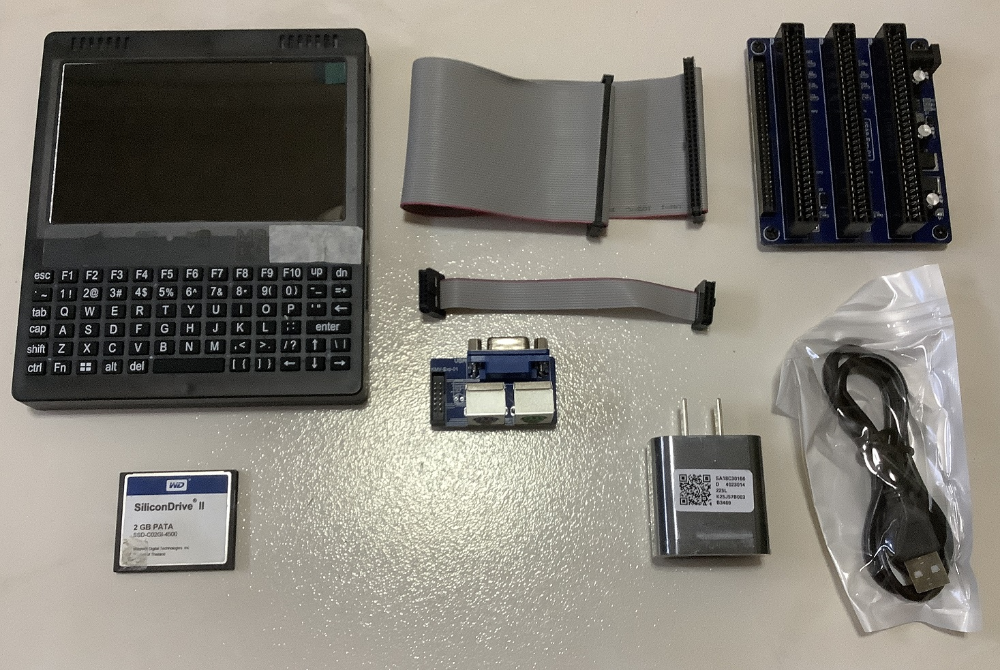Other than the svelte Hand386, it comes with a whole host of useful accessories to make it useful as an expandable desktop device:
- 2GB Compactflash (CF) card preinstalled with Windows 95
- VGA, PS/2 mouse and keyboard breakout board
- 2x6 pin 2.00mm pitch IDC ribbon cable
- 2A USB charger
- USB to barrel plug charge cable
- Requires add-on purchase:
- 3-slot 8-bit ISA backplane (requires separate 12V power supply)
- 2x30 pin 2.00mm pitch IDC ribbon cable
Demo videos
Let’s jump right in with a 12 mins video I made of the device to demo its capabilities.
- 00:00 - Booting DOS 6.22
- 00:14 - Descent at lowest quality
- 03:01 - Doom at low quality
- 05:12 - Planet X3
- 06:16 - DOS ChatGPT client
- 07:33 - CheckIt 3 system benchmarks
- 08:54 - Boot Windows for Workgroups 3.11
- 09:31 - Startup chime using Adlib wave driver
- 09:36 - Start Media Player to play Canyon.mid
- 09:57 - Program Manager Properties
- 10:09 - Open Driver Pane to show Adlib and Adlib wave driver
- 10:31 - Open USB flash drive and hotswap
- 11:19 - Closing applications and exit windows
- 11:30 - Exit Windows chime using Adlib wave driver
Using the 8-bit ISA backplane, a 3Com 3C509 NIC and a Blasterboard (Sound Blaster 2.0 clone) was added on. For the DOS applications, OPL FM and PCM sounds are directly recorded from the Line out of the Blasterboard. For WFW 3.11, they are recorded from the Hand386’s headphone jack.
It is immediately clear that the 386SX-class CPU struggles in running later DOS games which is entirely expected.
I made a 7 mins video of it running the 8088 Domination too.
Hardware
What exactly is a 386?
The 386 CPU was first launched by Intel in 1985. Known as 80386 or i386, it is the first 32-bit CPU of the x86 architecture.
Key additional features include a better implementation of protected mode which allowed access up to 4GiB of memory. Programs can now use a flat memory model instead of handling messy segmented memory of the past.
A virtual 8086 mode allows one or more 16-bit real mode programs to run in this protected mode environment. Windows uses such a mode to run applications like DOS programs.
Source: https://en.wikipedia.org/wiki/I386
The initial launch model was called the i386DX model with 32-bit data bus. The CPU core used in the Hand386 is based on the lower-cost 386SX variant which uses only a 16-bit data bus and only supports up to 16MiB of RAM.
This smaller bus also hurts the performance of the CPU relative to the original DX variant.
Specifications
- DM&P Ali M6117 with chipset (386SX-40)
- Chips and Tech F65535
- YMF262-M OPL3 with YAC512 DAC
- OPL3-driven speakers
- PC-speaker
- 8MiB RAM
- 2500 mAh battery
- 128 x 150 x 16mm (measured dimensions)
- Ports
- CF card slot
- USB port for flash drives
- Connector for VGA output, PS/2 mouse and keyboard
- Connector for 8-bit ISA backplane
- Headphone jack
External aspects
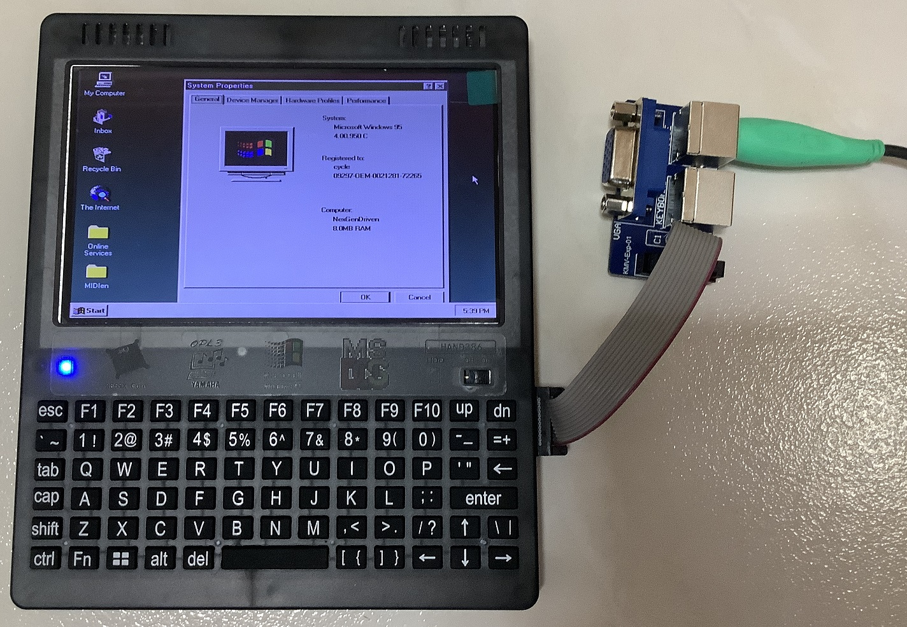The front of the device contains the following:
- LCD panel
- Fairly mushy keypad
- Power switch
- Disk activity LED
- Battery level LED
- Charge status LED
At my measured dimensions of 128 x 150 x 16mm, this device is very compact for what used to require desktop-sized components nearly 40 years ago.
The photo also shows the external VGA, PS/2 mouse and keyboard breakout board connected.
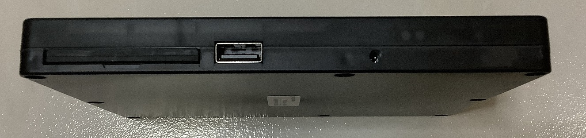On the left side of the Hand386, we see the CF card slot and a USB-port.
The USB port does not have generic USB functions that we associate with our modern machines. It is connected to a CH375 chip that only supports USB mass-storage devices like flash drives. Its DOS driver presents the USB device to the operating system as a removable storage media.
A CF card once fully inserted into the CF slot, it is flush with exterior of the case. This will present some challenge when removing it.
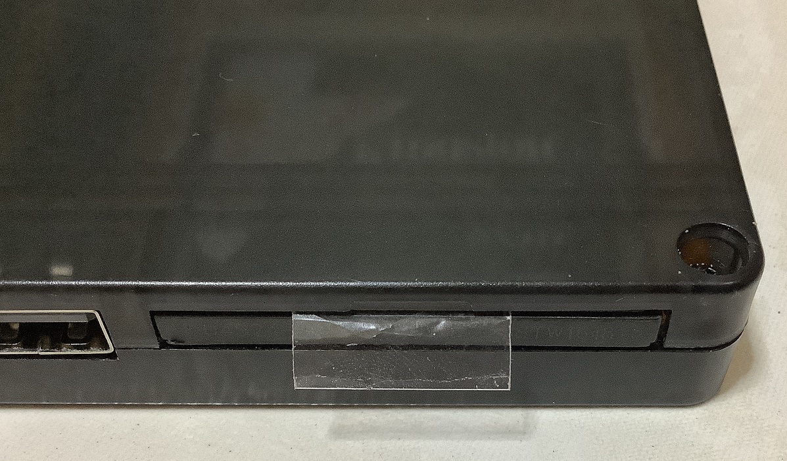To ease removal, I attached a plastic tape pull strip onto the CF card itself so it can be easily pulled out of the slot.
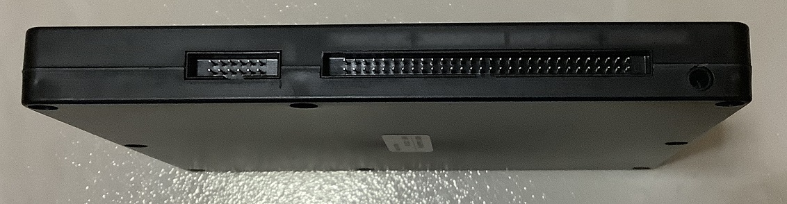On the right of the device, we have 2 ports for these purposes:
- 2x6 2mm pitch for VGA, PS/2 mouse and keyboard breakout board
- 2x30 2mm pitch for 8-bit ISA backplane
Very creative way to allow expansion options without compromising the device’s slim form factor.
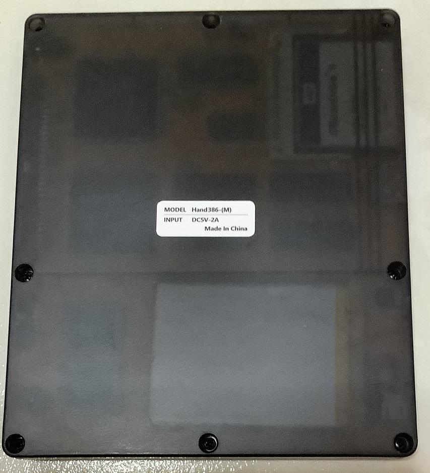The transclucent backcover shows the interesting components within. The cover can be easily removed after taking out 8x cross head screws.
Teardown
Now let’s come to the internal components that makes this tiny beauty tick.
Back of main PCB
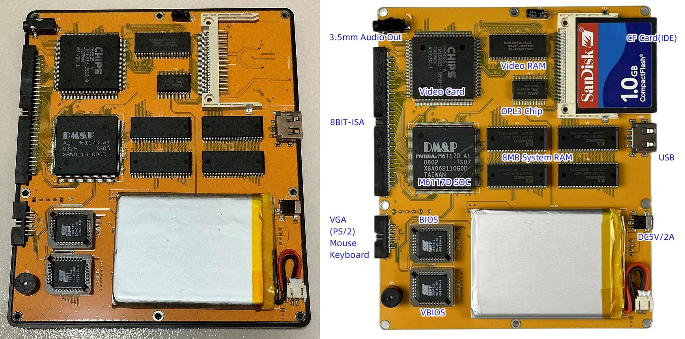Left is the photo I took and the right is the labeled version in the sales page.
The largest component here the battery is glued/taped down with a rather strong adhesive so removing it may be challenging in future.
The system does not use an actual 386SX chip but rather a highly-integrated Ali M6117D System-on-chip (SoC). According to the Ali M6117D’s datasheet, it has many features such as but definitely not limited to:
- Intel 386SX compatible core
- Memory Controller
- Interrupt and DMA controllers
- RTC
- PS/2 Mouse and Keyboard Controllers
- IDE Controller
The seller has also provided the pinout diagram for the breakout boards.
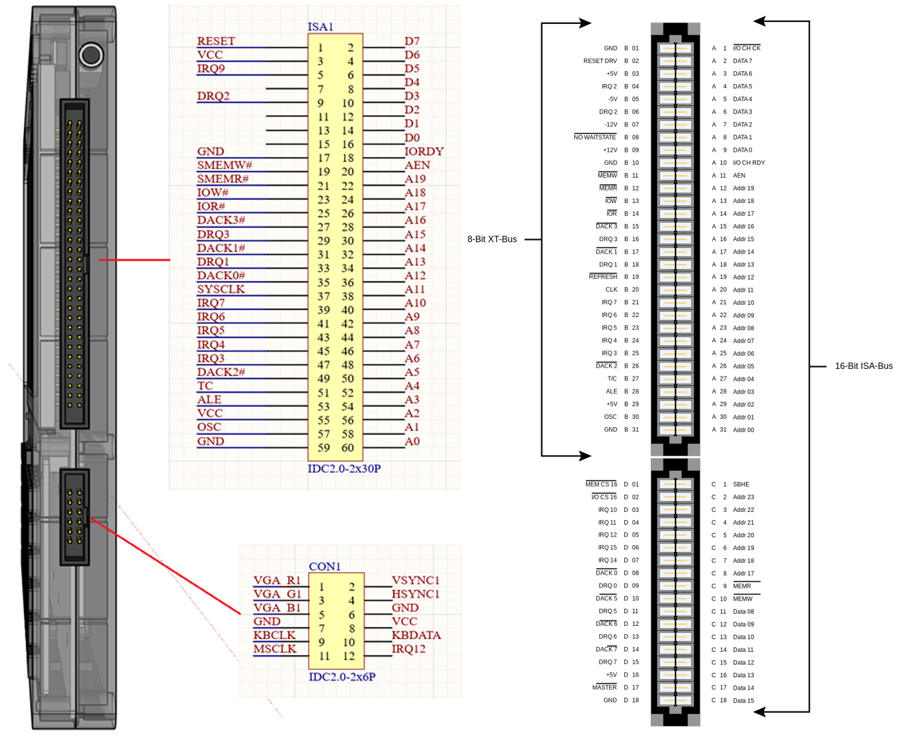Left for the seller’s diagram, right is the 8/16-bit ISA pinout obtained from Wikipedia.
From the diagram, the ISA pins broken out only provide the typical 8-bit ISA pins.
The SoC also supports a 16-bit ISA bus but I believe due to form factor limitations, the 16-bit pins are not brought out externally. Nevertheless, if those are brought out, it would no doubt have provided better expansion options.
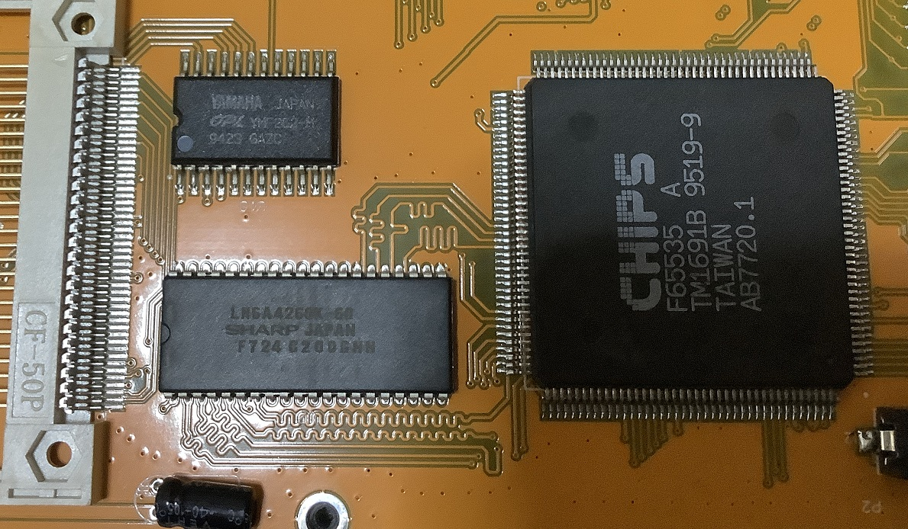The video card chip is a Chips and Tech 65535 that dates back to at least Mar 1994 based on the datasheet. It is paired with the video RAM chip of Sharp LH6A4260K-60. No datasheet can be found for this VRAM chip although Checkit says the VRAM amount is 256K.
An actual Yamaha YMF262-M OPL3 chip is spotted here so great for DOS games and Midi playback. In the DOS era, such chips are usually included on Sound Blaster Pro 2.0, 16 and AWE family of cards to provide FM synthesis capabilities. However, there are no Sound Blaster compatible chips present to handle PCM audio playback.
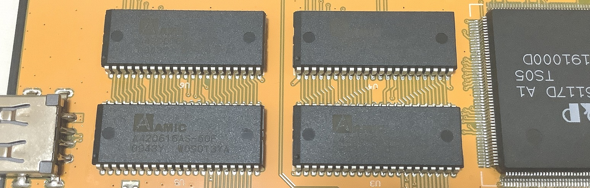4x 2MiB AMIC A420616AS-50F 50ns chips provide the 8MiB of RAM for the system.
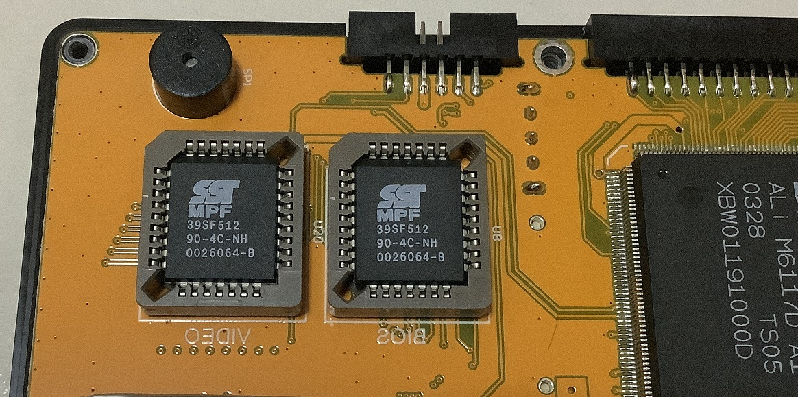2x SST 39SF512 64KiB CMOS flash chips hold the system BIOS and video BIOS for the system.
Front of main PCB
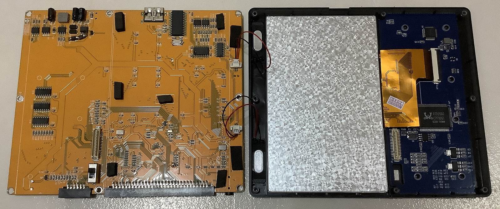The entire PCB can be lifted up after carefully disconnecting it from the socket of another PCB that holds the LCD controller and keyboard circuitry.
2 speakers are connected from the top cover to the main PCB.
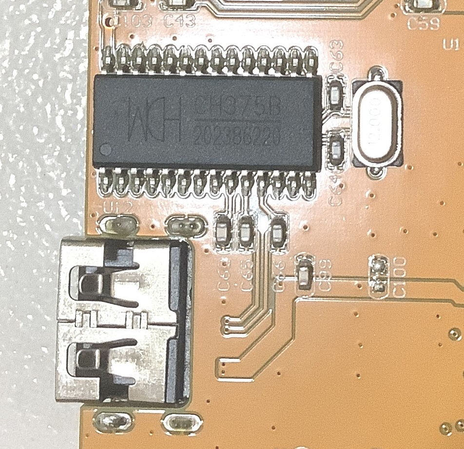Here we spot a WCH CH375B. This chip has been known for some time in the retro community through products like the lo-tech ISA-USB adapter.
This chip acting in USB host mode has built-in firmware to deal with USB mass-storage devices thus alleviating the need for complex USB stack programming on the host system thus very useful for simpler DOS systems. A DOS device driver is available to bring out this functionality which allows ease of file transfer to DOS systems via USB flash drives.
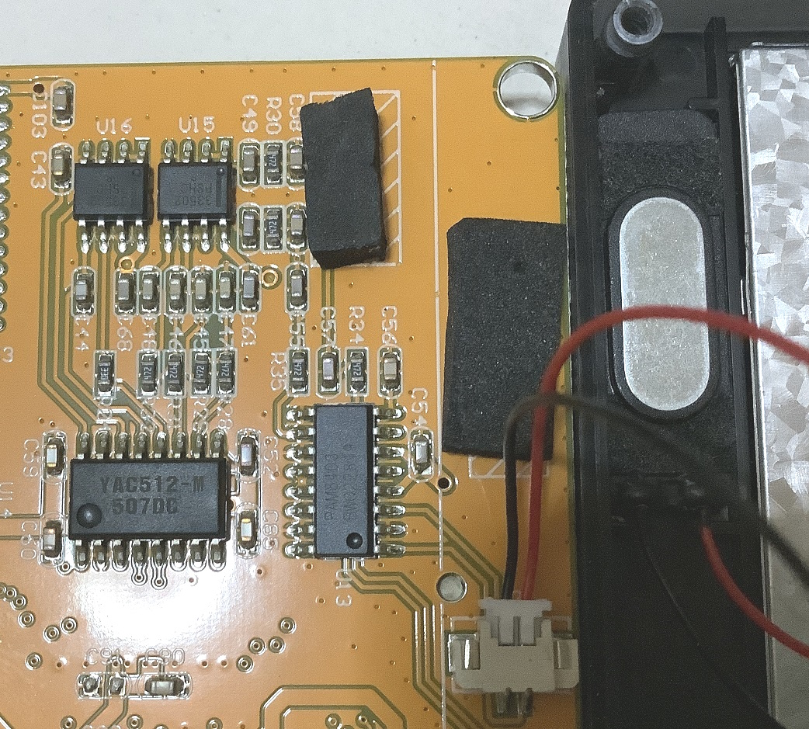The output of the Yamaha YMF262-M OPL3 chip is sent to a Yamaha YAC512-M Digital-to-Analog Converter (DAC). These 2 Yamaha chips are usually found as a pair even on the vintage sound cards. The analog output is amplified by a 3W Class D Amplifier PAM8403 before being sent to the speakers.
Display and keypad
The display and keypad section is handled by a single PCB.
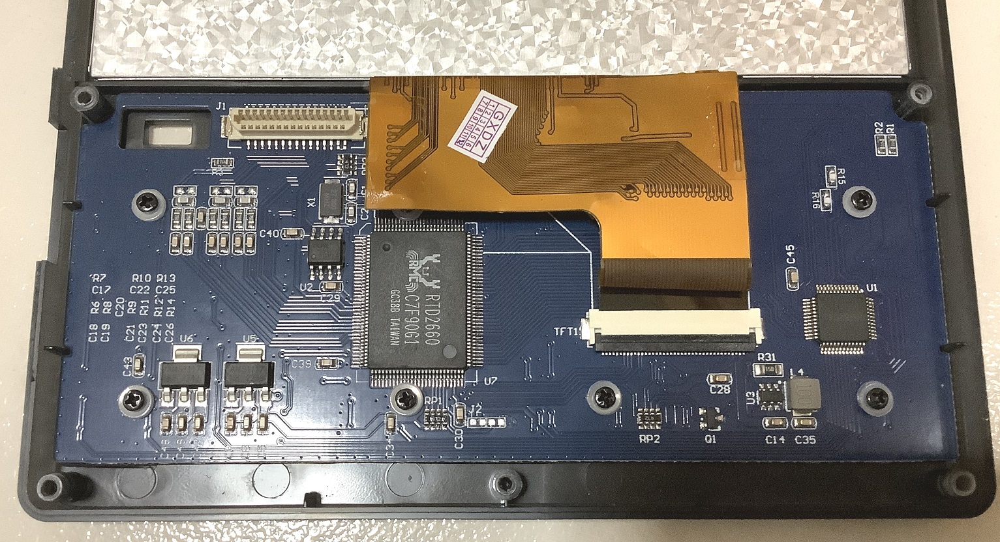The LCD display driver is provided by a Realtek RTD2660 chip.
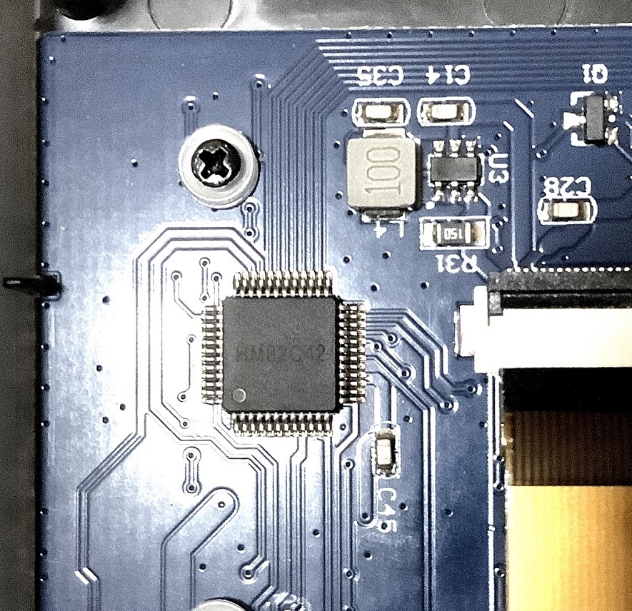A chip with probable silkscreen “HM82C42” was found. Googling does not turn up anything but given the amount of traces going to this chip, I’m going to suspect this is the keyboard controller to the PS/2 interface.
Added: From the comments at Hacker News, 82C42 is indeed a keyboard controller. There is a datasheet of another model VT82C42 made by Via.
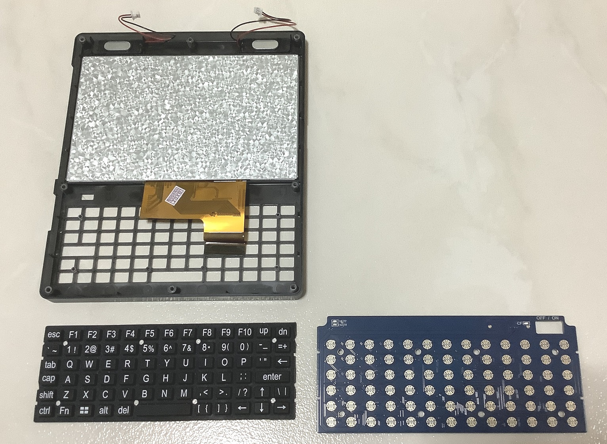The keypad is made up of an entire silicon rubber piece and PCB conductive pads. This explains the very mushy keypress feeling.
I would actually prefer more tactile individual keyswitches but this will significantly raise the component and assembly costs to unacceptable levels for some.
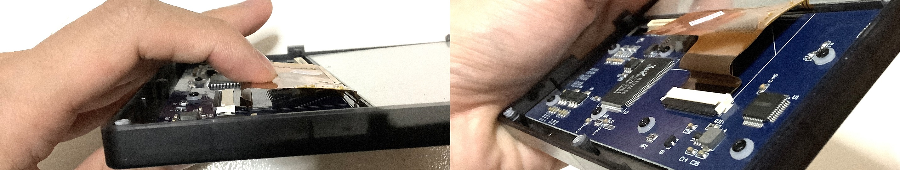The flex cable between the LCD panel and display controller board honestly worries me. It’s not so obvious in the photo after the top cover is removed but when everything is closed down, the cable will be pressed bent.
The bend was done as the distance between the panel and PCB port is slightly shorter than the length of the cable. I do not know how it will hold up over the long term.
My usage experience
With default Windows 95 setup
This is a 3 mins bootup and basic usage video based on the provided Windows 95 image.
The device struggles with Windows 95. I recommend not using Win 95 and instead changing it to the older DOS 6.22/Win 3.1 for a better user experience. A 386SX with its 16-bit data bus is technically even below the minimum requirements for Windows 95 which requires a 386DX with 32-bit data bus.
The viewing angle of the LCD panel is sufficient for use as a palmtop if you view it head-on but not much more.
You can notice from the video that the internal display is almost off. It is noted by the seller that when an external monitor is connected to the VGA port of the breakout, the internal LCD will dim (to unusable levels). The external display will also be dim but you should be able to modify the brightness/contrast of your external monitor.
The device gets very uncomfortably hot after some time which indicates the CPU load and stress Windows 95 usage places on the system.
LCD resolution
By default, the video BIOS locks the screen resolution to 640x480 60Hz with the right portion being cutoff. The typical DOS resolution is 720x400 70Hz (80x25 text mode).
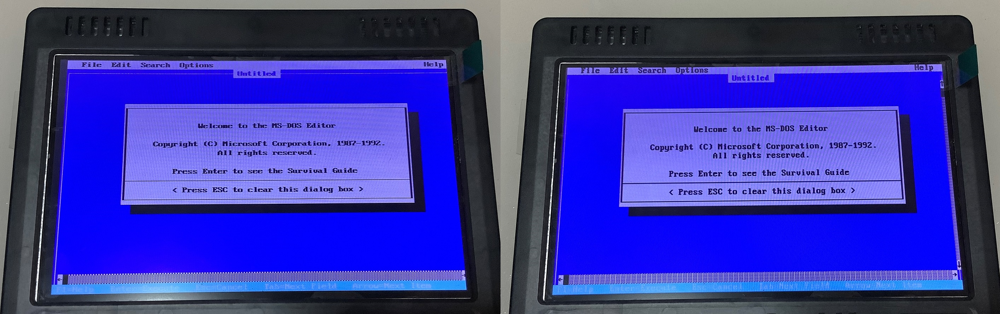Left shows the default mode, right shows the typical mode.
We can use CT.COM obtained from the driver pack (meant for 65545) to switch it to the typical mode.
With my “docking station”
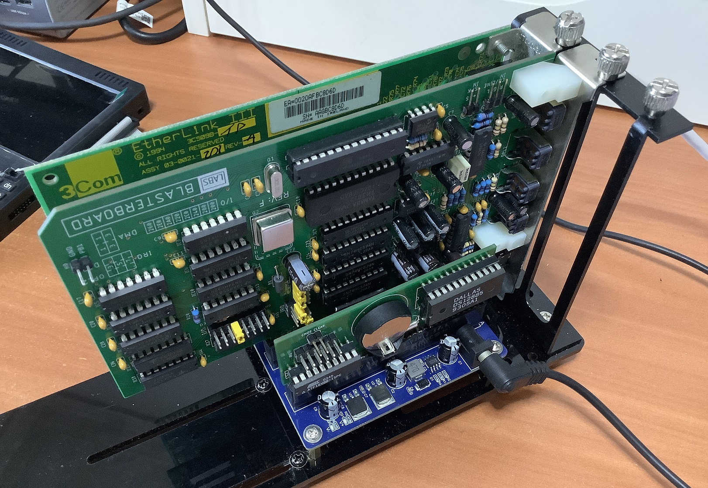To fully flesh out the capabilities of this system, I used the ISA backplane to add these cards:
- 3Com 3C509 10Mbps NIC for networking
- Blasterboard (Sound Blaster 2.0 clone) for PCM sound.
- RTC ISA 8 bits (Very Low Profile) to augment the relatively poor internal RTC.
The cards and ISA backplane are placed on a vertical bracket riser that was initially meant for external PCIe GPUs. Thanks to awesome PC backward compatibility, even ISA cards can fit there as well.
With a DOS 6.22/Win 3.1 setup, the system feels more responsive and definitely a better user experience. The device still gets warm but not as hot as with Windows 95.
The config.sys and autoexec.bat configuration and drivers used for this setup can be found here. https://github.com/yeokm1/retro-configs/tree/master/laptops/hand386.
A small issue I ran into is when I have an external sound card that has its own OPL chip like a Sound Blaster (clone). As I believe OPL register commands are mostly only written to the parallel ISA bus, there should not be any conflicts as both chips will only just receive commands. However, both chips will now playback the FM audio.
The internal OPL3 chip will thus play the music through the internal speakers which may not be desired. One can (un)mute the speakers by pressing Fn+F1/F2 but I’m not sure if there are other problems I may not know about.
Other observations
- To use the ISA backplane, the Hand386 may have to be turned on first before powering the backplane. If the backplane is powered on first, the Hand386 may sometimes not boot. I can’t be sure if this is related to the behaviour of certain ISA cards like my 3Com 3c509 or Blasterboard.
- The onboard RTC does not seem to keep time well. It loses about a minute every 1-2 hours so regular NTP sync or manual time setting is required if time is important for you.
- From a full-charge, I get about 1.5h of usage on Win 3.1 before the low battery warning comes on and the device will shut off totally shortly after. Nevertheless, the battery life of this device should not be compared to modern laptops and I’m ok with it as-is.
- The battery can drain faster than the charging circuitry can handle under heavy load.
- Mouse support is disabled by default when the BIOS is (deliberately/randomly) reset. This is mentioned in the user manual.
- With exception to the glued down battery, the device seems very repairable. No weird screws and everything is accessible. Surface mounted ICs are placed far enough from each other that reworking them should have minimal issue.
- Headphone jack volume can be soft.
- My device’s display controller/driver/panel actually failed after some days of use. Upon verifying the fault through a video I sent them, they agreed to send me a replacement for my defective unit. I have to mention their exemplary customer service.
IPS LCD replacement
Based on online chatter, I found out a possible IPS replacement LCD which is brighter and offers better viewing angles.
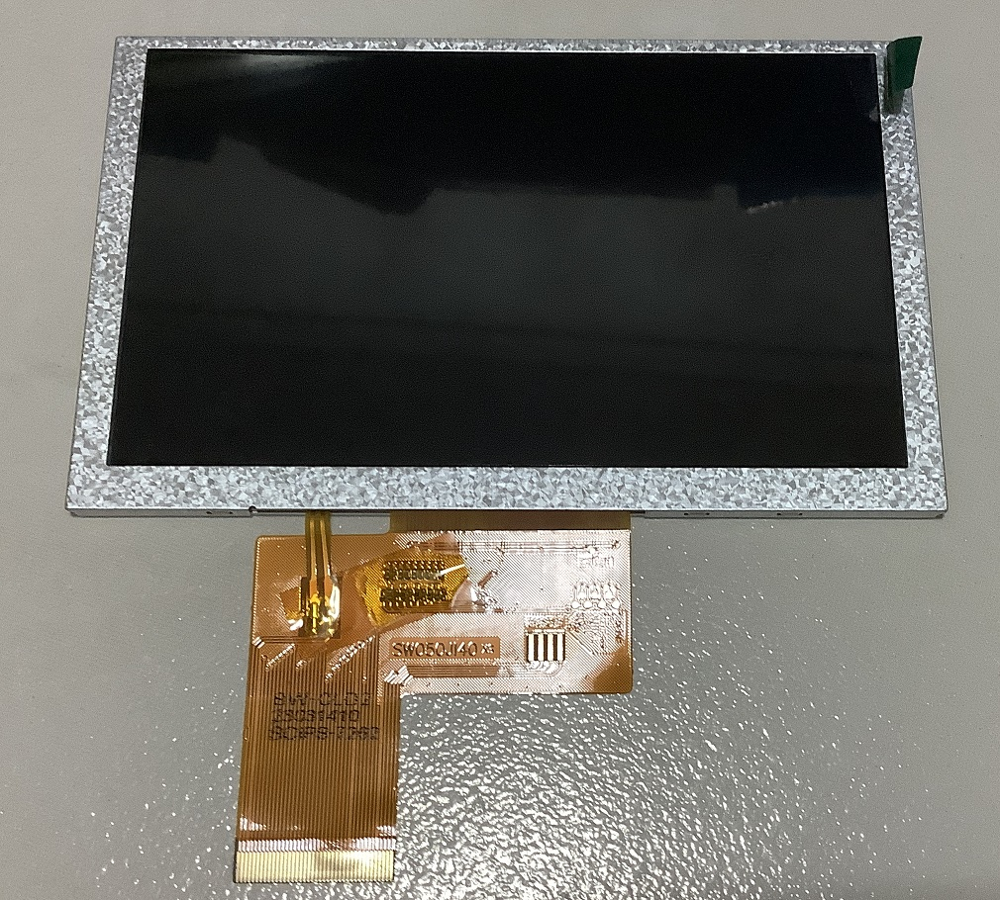I purchased this IPS 500 screen from Aliexpress.
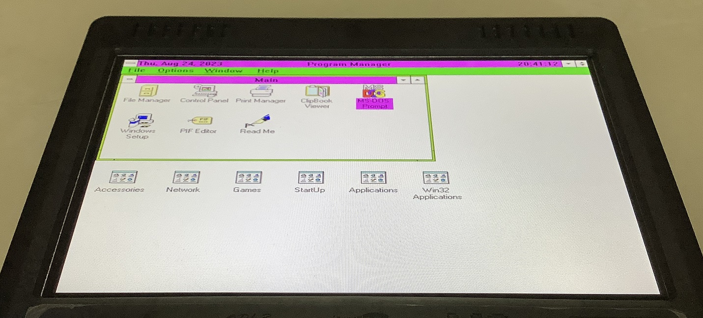Here is the result after the replacement. Even at a more extreme angle, the display still looks bright and sharp. Definitely a worthy upgrade!
Suggested improvements
I sent this list to the Hand386 seller. It’s just some ideas I can consider for addition if I was the designer of this device. Not everything is possible as until one gets to the engineering aspect, it’s hard to tell if these features are feasible to be added.
- Audio
- BIOS disable option for onboard OPL3 to avoid potential conflicts as some users like me have an external Sound Blaster/Adlib or OPL-capable card.
- Volume control for onboard speakers and headphone jack.
- Add Sound Blaster compatible PCM audio support using chips from ESS or Crystal.
- Power
- Use USB-C port for power supply instead of barrel jack
- User interface
- Add a trackpad/ball or some kind of interface to control the mouse
- Mouse support enabled by default in the BIOS
- Display
- Ability to disable onboard C&T 65535 ISA graphics chip if a user has an external ISA graphics card
- Eliminate the VGA dimness when attaching an external monitor.
- If it does not cost too much, replace the display with one with better viewing angles such as IPS.
- Heat/Casing/Ports
- Add some vents in the casing or heatsink/fan. Device can get uncomfortably warm after prolonged use especially if using Windows 95 or gaming.
- 386 in the laptop form factor like Book8088 would be easier to use and have better thermal cooling and port options
- Add PCMCIA support. Existing bus extension with ribbon cable is good but can be difficult to remove sometimes without bending the pins.
- Some means to easily remove the CF card.
- Software
- Windows 95 is not optimal for 386SX. Should preinstall with DOS 6.22 and Windows for Workgroups 3.11.
- Replace CH375DOS.sys with CH375286.SYS for more stable flash drive support and performance. See this driver comparison video from the Youtuber THE PHINTAGE COLLECTOR.
Concluding remarks
Despite the issues I pointed out, I have to say this product is very well made and has gotten many things right. It’s a very good job for a first iteration of such a product.
As an embedded engineer myself who has worked on product design projects, I can appreciate the difficulty in designing for manufacturing such a product from scratch into such a compact package. 386 machines used to be full-sized desktops or very thick laptops.
There are several complaints on the price of the system at about US$200. Given the relatively small production of run of this product for a niche market, this price is actually very good given the low production quantities of hundreds? (definitely not more than low thousands) and with an injection moulded case to boot.
The amount of electrical, mechanical and software engineering effort that went into this product is not small for such a niche product. From looking at the mechanical/board design and component datasheets, I have indeed learned quite a bit on how such a product can be designed and certainly have gained useful knowledge.
I have to commend their excellent customer service. They are very responsive and helpful in my queries of technical details of this device. Not to mention a replacement when I faced the display defect. Definitely not a vapourware product.


{kind=link}
{kind=link}
{kind=link}
{kind=link}
{kind=link}
{kind=link}
{kind=link}
{kind=link}
{kind=link}
{kind=link}
{kind=link}
{kind=link}
{kind=link}
{kind=link}
{kind=link}
{kind=link}
{kind=link}
{kind=link}
{kind=link}
{kind=link}
{kind=link}
{kind=link}